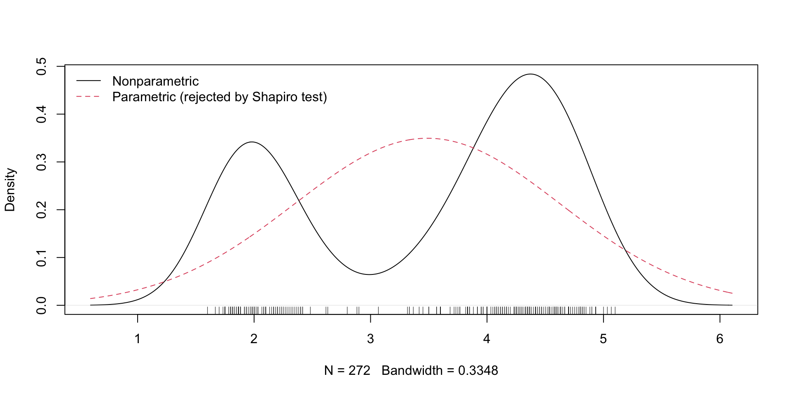

## Generate some data: sex (unordered categorical), income (ordered categorical),
## and height (numeric)
set.seed(42)
n <- 100
sex <- sample(c("Female","Male"),n,replace=TRUE,prob=c(.4,.6))
income <- sample(c("Low","Middle","High"),n,replace=TRUE,prob=c(.3,.5,.2))
height <- rnorm(n,mean=150,sd=20)
## Note - by default these variables may not be the data types we desire
class(sex);class(income);class(height)
## income is already numeric(), but sex and height are character()
## sex is categorical and unordered, so cast as type factor()
sex <- factor(sex)
## income is categorical and ordered, but we need to ensure intended order (it
## will assume alphabetical ordering otherwise). Suppose you ignore it - let's
## see what happens when we just cast as type ordered() using defaults
income <- ordered(income);income
## The levels are in alphabetical order, which we don't want
levels(income)
## We shall reorder the ordered factor levels as intended using levels=...
income <- ordered(income,levels=c("Low","Middle","High"))
levels(income)
## Check data types again
class(sex);class(income);class(height)
## Note that with integers the default ordered() works fine
x <- sample(c(2,5,4,3,1),n,replace=TRUE)
x <- ordered(x)
levels(x)Nonparametric Workshop
XIII FORO INTERNACIONAL DE ESTADÍSTICA APLICADA
Veracruz, Mexico
Veracruz, Mexico
Jeffrey S. Racine
McMaster University
Monday, May 20, 2024
Slide Pro-Tips
Link to slides - jeffreyracine.github.io/UVworkshop (case sensitive) (Google Translate)
View full screen by pressing the F key (press the Esc key to revert)
Access navigation menu by pressing the M key (navigation menu X to close)
Advance using arrow keys
Zoom in by holding down the Alt key in Windows, Opt key in macOS or Ctrl key in Linux, and clicking on any screen element (Alt/Opt/Ctrl click again to zoom out)
Use copy to clipboard button for R code blocks (upper right in block) to copy and paste into R/RStudio
Export to a PDF by pressing the E key (wait a few seconds, then print [or print using system dialog], enable landscape layout, then save as PDF - press the E key to revert)
Enable drawing tools - chalk board by pressing the B key (B to revert), notes canvas by pressing the C key (C to revert), press the Del key to erase, press the D key to download drawings
Welcome!
The website with install info for R, RStudio, and \(\rm\TeX\) is
The GitHub repository with example code is
No seas tímido, siéntete libre de hacer preguntas
¡Vámonos!
Welcome!
You will be guided through basic nonparametric kernel methods using R
You will also, if patient, be introduced to recently released tools for conducting reproducible research
No background knowledge of either nonparametric analysis or the R programming language is required
All software is available for free and is open source
For more detailed descriptions see Racine (2019), Racine (2012), and Hayfield and Racine (2008)
Overview
I hope that you leave this workshop armed with a modern set of data-analytic tools
Let’s briefly discuss the following:
Background
Data Types
R and Data Types
Important
Pre-cast data prior to analysis so R functions can do their job
It is crucial to understand different data types in R
There are three R functions we will use:
numeric(),factor(), andordered()These correspond to data that are numbers, unordered categories, and ordered categories, respectively
Pay careful attention to the following example of how we cast our data in R prior to analyzing it
RStudio R Editor Interface
R and Data Types
Copy and paste this code into RStudio (to copy, right-click the clipboard icon in the upper right of the code; in RStudio choose menu
"File"->"New File"->"R Script"which will open in the upper left pane by default, then paste), then execute the code line-by-line (position your cursor on the first line of the R code in RStudio then right-click on the"Run"icon)
Background
Density Estimation
Parametric or Nonparametric?
Suppose we need to estimate the density \(f(x)\) of some numeric random variable \(X\)
## Let's simulate a random numeric sample from the normal distribution
set.seed(42)
n <- 1000
x <- rnorm(n)
## Let's sort the data so we can graph x versus dnorm(x,...) using lines (type="l")
x <- sort(x)
## Conduct a test of normality
shapiro.test(x)
##
## Shapiro-Wilk normality test
##
## data: x
## W = 0.99882, p-value = 0.767
## Since we simulated the data, let's plot the true, known, parametric density
## (we can't do this with actual data because the density of such data is, in
## general, unknown)
plot(x,dnorm(x,mean=mean(x),sd=sd(x)),type="l",ylab="Parametric Density Estimate",xlab="X")Parametric or Nonparametric?
Parametric or Nonparametric?
The R function
shapiro.test(x)tests for normalityShapiro-Wilk normality test: xTest statistic P value 0.9988 0.767 This is simulated normal data and we do not reject the null that the data are normally distributed
Warning
What if the null was wrong (i.e., what if we rejected the null and it was not a Type I error)?
Parametric or Nonparametric?
Now let’s test normality for actual data,
eruptionsShapiro-Wilk normality test: eruptionsTest statistic P value 0.8459 9.036e-16 * * * Warning
Oh oh… I guess we rule out the normal parametric model… what next?
Parametric or Nonparametric?
Actual data (\(X_i\), \(i=1,\dots,n\)) is rarely drawn from the simple parametric distributions used in sampling theory
Sampling theory describes summary statistics, e.g., averages of actual data, or averages of squared deviations, such as \[\begin{align*} \hat\mu&=\frac{1}{n}\sum_{i=1}^n X_i\quad\text{ or }\quad\hat\sigma^2=\frac{1}{n-1}\sum_{i=1}^n (X_i -\hat\mu)^2& \end{align*}\]
But we need to estimate the density of the actual data (i.e., \(f(x)\)), not the density of some summary statistic (i.e., \(f(\hat\mu)\))
Parametric or Nonparametric?
Below is a nonparametric density estimate estimate using base R’s
density()function and a data rug for theeruptionsdata (it is bi-modal and asymmetric)
Parametric or Nonparametric?
Parametric or Nonparametric?
Below is a nonparametric estimate using base R’s
density()function and a normal parametric estimate using base R’sdnorm()function (recall the normal parametric model has been rejected here)data(faithful) eruptions.eval <- density(faithful$eruptions)$x plot(density(faithful$eruptions),main="") with(faithful,lines(eruptions.eval, dnorm(eruptions.eval, mean=mean(eruptions), sd=sd(eruptions)), col=2, lty=2)) rug(faithful$eruptions) legend("topleft", c("Nonparametric","Parametric (rejected by Shapiro test)"), lty=c(1,2), col=c(1,2), bty="n")
Parametric or Nonparametric?

Parametric or Nonparametric?
Here lies the crux of the parametric problem
We write down some parametric model that is drawn from a dense space of functions (their number is uncountable)
One very important assumption is this parametric model is the true model, and all model properties (unbiasedness, consistency etc.) depend crucially on this being the case
But if you are serious, you immediately test your model for correct specification
What if the parametric model is rejected, as it often is?
Nonparametric Essentials
Numeric Data
Numeric Data
Parametric methods require the user to make very strong assumptions about the data generating process (DGP)
We just considered density estimation, but the exact same issue plagues all parametric analysis (i.e., regression, etc.)
We will consider, instead, nonparametric kernel estimators
A kernel is simply a weight function, which for numeric data we denote by \(K(Z_i)\) where \(Z_i=(x-X_i)/h\)
We give higher weight to observations close to \(x\) (i.e., small \(Z_i\)) than to those lying further away (i.e., large \(Z_i\))
Non-Smooth or Smooth?
Below are non-smooth and smooth nonparametric density estimates for the numeric variable
eruptions(recall the normal parametric model was rejected by the data so we proceed with non-smooth and smooth nonparametric methods, and we usehist()and the np package’snpudens()function, respectively)
Non-Smooth or Smooth?

Non-Smooth or Smooth?
The non-smooth nonparametric histogram density estimator is \[\begin{equation*} f_H(x)=\frac{1}{nh}\sum_{i=1}^n\mathbf{1}(X_i\text{ is in the same bin as }x) \end{equation*}\]
This estimator has drawbacks, including
it is not particularly efficient in the statistical sense
the estimator’s discontinuity presents obstacles if derivatives are required (\(df_H(x)/dx\) is 0 or undefined)
Smooth Univariate Density Estimation
Consider a symmetric smooth kernel function that satisfies \(K(z)\ge 0\) and \(\int_{-\infty}^{\infty}K(z)\,dz=1\)
The smooth nonparametric kernel density estimator is \[\begin{equation*} \hat f(x)=\frac{1}{nh}\sum_{i=1}^n K\left(\frac{x-X_i}{h}\right) \end{equation*}\]
This estimator is dominant in applied settings, though boundary bias can be an issue (simple corrections exist, see
npuniden.boundary()in thenppackage)
Smooth Univariate Density Estimation
Important
The kernel function \(K(z)\) is relatively unimportant (it imparts smoothness on the estimate, where smooth functions are continuously differentiable functions)
The bandwidth \(h\) is crucial (it governs the bias-variance trade-off)
Closeness is determined by a bandwidth, denoted \(h\)
We choose \(h\) to minimize square error risk and trade off bias for variance for the sample at hand
To accomplish this we use data-driven methods for selecting \(h\) (e.g., least-squares cross-validation)
Smooth Univariate Density Estimation
We call
npudens()with optionbwmethod="cv.ls"library(np) data(faithful) fhat <- npudens(~eruptions,bwmethod="cv.ls",data=faithful) summary(fhat$bws) ## ## Data (272 observations, 1 variable(s)): ## ## Bandwidth Selection Method: Least Squares Cross-Validation ## Formula: ~eruptions ## Bandwidth Type: Fixed ## Objective Function Value: 0.4284678 (achieved on multistart 1) ## ## Var. Name: eruptions Bandwidth: 0.1026276 Scale Factor: 0.3310986 ## ## Continuous Kernel Type: Second-Order Gaussian ## No. Continuous Vars.: 1 ## Estimation Time: 0.09 seconds plot(fhat,neval=250,plot.errors.method="bootstrap")
Smooth Univariate Density Estimation
Smooth Joint Density Estimation
So far we have considered univariate densities (\(X\in\mathbb{R}^1\))
Let \(X\in \mathbb{R}^q\) denote a numeric vector of dimension \(q\)
Let \(f(x)=f(x_1,x_2,\dots,x_q)\) denote a joint PDF evaluated at \(x=(x_1,x_2,\dots,x_q)'\)
Let \(\{X_1,X_2,\dots,X_n\}\) represent \(n\) draws of a numeric random vector \(X\), where the \(i\)th draw is denoted by \(X_i=(X_{i1},X_{i2},\dots,X_{iq})\)
Smooth Joint Density Estimation
The multivariate kernel density estimator is \[\begin{equation*} \hat f(x)=\frac{1}{nh_1\dots h_q}\sum_{i=1}^n K\left(\frac{x_1-X_{i1}}{h_1},\dots,\frac{x_q-X_{iq}}{h_q}\right) \end{equation*}\]
\(K(\cdot)\) is a multivariate kernel (typically the product of univariate kernels - we have lots of flexibility here)
We continue to use data-driven methods (typically cross-validation) for bandwidth selection when \(q\ge1\) (optimal bandwidths differ across variables, i.e., \(h_1\ne h_2\), etc.)
Smooth Joint Density Estimation
Note we again use the function
npudens()with the formula interface, but the formula now lists all variables separated by a+signNote since we do not specify the argument
bwmethod=it uses the default (bwmethod=cv.ml, i.e., likelihood cross-validation)
Smooth Joint Density Estimation

Nonparametric Essentials
Categorical Data
Categorical Variables
We considered the density of continuously distributed random variables \(X\in\mathbb{R}\), but we also deal with the probability function of categorical variables \(X\in\mathcal{D}\) where \(\mathcal{D}\) is a discrete set
We might presume a parametric model for the probability function of \(X\in\mathcal{D}\) but we face exactly the same issue we faced before
The non-smooth categorical counterpart to the histogram is called the frequency or empirical probability estimator and, like the histogram, has some drawbacks
Univariate Probability Estimation
Let \(X\in\mathcal{D}=\{0,1,\dots,c-1\}\) be categorical
\(X\) can be unordered (
factor()in R) or ordered (ordered()in R)The nonparametric frequency estimator of \(p(x)\) is \[\begin{align*} p_n(x)&=\frac{\# X_i\text{ equal to }x}{n}\\ &=\frac{1}{n}\sum_{i=1}^n \mathbf{1}(X_i=x) \end{align*}\]
Univariate Probability Estimation
The unordered nonparametric kernel estimator of \(p(x)\) is \[\begin{equation*} \hat p(x)=\frac{1}{n}\sum_{i=1}^n L(X_i,x,\lambda) \end{equation*}\]
\(L(\cdot)\) is an unordered kernel function given by \[\begin{equation*} L(X_i,x,\lambda)=\left\{ \begin{array}{ll} 1-\lambda & \mbox{ if } X_i=x\\ \lambda/(c-1) & \mbox{ otherwise} \end{array} \right. \end{equation*}\]
\(\lambda\) is a smoothing parameter (counterpart to bandwidth \(h\))
Example - Unordered Probability

Univariate Probability Estimation
Let \(X\in\mathcal{D}=\{0,1,\dots,c-1\}\), \(c\ge 2\), be ordered
The ordered nonparametric kernel estimator of \(p(x)\) is \[\begin{equation*} \hat p(x)=\frac{1}{n}\sum_{i=1}^n l(X_i,x,\lambda) \end{equation*}\]
\(l(X_i,x,\lambda)\) is an ordered kernel function given by \[\begin{equation*} l(X_i,x,\lambda)=\frac{\lambda^{d_{xi}}}{\Lambda_i} \end{equation*}\]
Example - Ordered Probability
Nonparametric Essentials
Mixed Data
Mixed Data Density Estimation
Statisticians know that \(f(x)\) and \(p(x)\) are both called density functions (the difference lies in their measure - the latter uses counting measure), so we adopt \(f(x)\)
Suppose you have a joint density defined over mixed data types, say, one numeric (\(X^c\in\mathbb{R}\)) and one unordered (\(X^d\in\mathcal{D}\) with cardinality \(c\))
We would like to model their joint density function \(f(x)=f(x^c,x^d)\), where the superscripts \(^c\) and \(^d\) denote continuous and discrete data types, respectively, and where \(x=(x^c,x^d)\in\mathbb{R}\times\mathcal{D}\)
Mixed Data Density Estimation
The kernel estimator of \(f(x^c,x^d)\) is \[\begin{equation*} \hat f(x^c,x^d)=\frac{1}{n}\sum_{i=1}^n \frac{1}{h}K\left(\frac{X_i^c-x^c}{h}\right)L(X_i^d,x^d,\lambda) \end{equation*}\]
\(K(\cdot)\) and \(L(\cdot)\) are (univariate) numeric and unordered kernel functions, respectively
If you had one numeric and one ordered variable you would use the ordered kernel \(l(X_i^d,x^d,\lambda)\) above
Now let’s consider the general multivariate mixed data density case
Mixed Data Density Estimation
In general multivariate settings, the probability density function \(f(x)\) might use some combination of \(q\) numeric, \(r\) unordered, and \(s\) ordered variable types (\(x\) and \(X_i\) are \(q+r+s\)-vectors)
The (product) kernel for estimating the joint density function is \[\begin{equation*} \prod_{j=1}^qh^{-1}_jK\left(\frac{x^c_j-X^c_{ij}}{h_j}\right)\prod_{j=1}^r L(X^u_{ij},x^u_j,\lambda^u_j)\prod_{j=1}^s l(X^o_{ij},x^o_j,\lambda^o_j) \end{equation*}\]
All we are doing here is using the appropriate kernel function for each data type
Mixed Data Density Estimation
Let \(\gamma=(h_1,\dots,h_q,\lambda^u_1,\dots,\lambda^u_r,\lambda^o_1,\dots,\lambda^o_s)\)
Call the product kernel function on the previous slide the generalized kernel, i.e., let the expression be written as \[\begin{equation*} K_\gamma(X_i,x)=\prod_{j=1}^q[\dots]\prod_{j=1}^r[\dots]\prod_{j=1}^s[\dots] \end{equation*}\]
With \(x\) and \(X_i\) being \(q+r+s\) vectors, we write \(\hat f(x)\) as \[\begin{equation*} \hat f(x)=\frac{1}{n}\sum_{i=1}^nK_{\gamma}(X_i,x) \end{equation*}\]
Mixed Data Density Estimation
The key point is that once you cast your data, then the R functions in the
nppackage know exactly what to doThey automatically use the appropriate kernel for the appropriate data type (numeric, factor, ordered)
The data-driven bandwidth methods adjust automatically to the data type
Methods for inference (confidence intervals, significance testing in regression) do the same
Let’s consider a quick example
Example - Mixed Data Density
We use Wooldridge’s
wage1data and consider two variables, one numeric (lwage) and one ordered (numdep)lwageis the logarithm of an individual’s average hourly earnings, andnumdepis their number of dependentsThe number of observations in each cell is tabulated in Table 1
Table 1: Counts of number of dependants present in 526 households by cell numdep 0 1 2 3 4 5 6 counts 252 105 99 45 16 7 2 We estimate \(\hat f(lwage,numdep)\) and plot it in Figure 1
Example - Mixed Data Density
Below is the R code to estimate and plot the joint density (we use the
plot3Dpackage and reformat the data to render this plot)library(np) library(plot3D) data(wage1) bw <- npudensbw(~lwage+ordered(numdep),data=wage1) numdep.seq <- with(wage1,sort(unique(numdep))) lwage.seq <- with(wage1,seq(min(lwage),max(lwage),length=50)) wage1.eval <- expand.grid(numdep=ordered(numdep.seq),lwage=lwage.seq) fhat <- fitted(npudens(bws=bw,newdata=wage1.eval)) ## Hack since scatter3D converts ordered 0-6 to numeric 1-7 scatter3D(as.numeric(wage1.eval[,1])-1,wage1.eval[,2],fhat, ylab="Log-Wage", xlab="Number of Dependants", zlab="Joint Density", ticktype="detailed", angle=15, box=TRUE, type="h", grid=TRUE, col="blue", colkey=FALSE)
Example - Mixed Data Density
Figure 1: Mixed-data bivariate kernel density estimate for the joint PDF of lwage (numeric) and numdeps (ordered)
Nonparametric Regression
Nonparametric Regression
The conditional mean function \(g(x):=\mathbb{E}(Y\vert X=x)\) for numeric \(Y\in\mathbb{R}\) is defined as \[\begin{equation} \label{g(x)} g(x)=\int y\frac{f(y,x)}{f(x)}\,dy=\frac{m(x)}{f(x)} \end{equation}\]
Let’s start with \(X\in\mathbb{R}^1\) (i.e., one numeric predictor)
We aim to estimate the unknown regression model \(y=g(x)+\varepsilon\) without assuming that, e.g., \(g(x)=\beta_0+\beta_1x\)
Nonparametric Regression
Regression is hard because \(f(y,x)\) and \(f(x)\) are unknown
They can be consistently estimated using \(\hat f(y,x)\) and \(\hat f(x)\)
For continuously distributed \(Y\in\mathbb{R}\), the local constant kernel regression estimator replaces the unknown \(f(y,x)\) and \(f(x)\) with \(known\) \(\hat f(y,x)\) and \(\hat f(x)\) in \(\eqref{g(x)}\), hence \[\begin{equation} \hat g(x)=\int y \frac{\hat f(y,x)}{\hat f(x)}\,dy=\frac{\hat m(x)}{\hat f(x)} \end{equation}\]
Nonparametric Regression
For \(X\in\mathbb{R}^1\), we estimate \(g(x)\) by replacing the unknown \(f(x)\) in \(\eqref{g(x)}\) with \[\begin{equation*} \hat f(x)=\frac{1}{nh}\sum_{i=1}^n K\left(\frac{x-X_i}{h}\right), \end{equation*}\]
and replacing the unknown \(f(y,x)\) in \(\eqref{g(x)}\) with \[\begin{equation*} \hat f(y,x)=\frac{1}{nh_yh}\sum_{i=1}^n K\left(\frac{y-Y_i}{h_y}\right)K\left(\frac{x-X_i}{h}\right) \end{equation*}\]
Nonparametric Regression
Some mathematical simplification of \(\hat g(x)\) leads to \[\begin{equation*} \hat g(x)=\sum_{i=1}^n Y_i\left\{\frac{K\left(\frac{X_i-x}{h}\right)}{\sum_{i=1}^n K\left(\frac{X_i-x}{h}\right)}\right\}=\sum_{i=1}^n Y_i W_i(x) \end{equation*}\]
With mixed data multivariate \(X\) (i.e., \(x\) and \(X_i\) are \(q+r+s\)-vectors) we replace \(K(\cdot)\) with \(K_\gamma(X_i,x)\)
The estimated nonparametric regression function is \[\begin{equation} y=\hat g(x)+\hat\epsilon \end{equation}\]
Simulated Data Illustration
library(np)
set.seed(42)
n <- 1000
x <- sort(runif(n))
dgp <- cos(2*pi*x)
y <- dgp + rnorm(n,sd=0.25*sd(dgp))
ghat <- npreg(y~x)
plot(x,y,cex=0.5,col="grey",xlab="X",ylab="Y")
lines(x,dgp)
lines(x,fitted(ghat),col=2)
abline(ghat.ols <- lm(y~x),col=3)
legend("top",c("DGP","Kernel","OLS"),col=1:3,lty=1,bty="n")
Simulated Data Illustration: OLS
How does the simple parametric linear model ghat.ols do for this simulated data?
| Estimate | Std. Error | t value | Pr(>|t|) | |
|---|---|---|---|---|
| (Intercept) | 0.03148 | 0.04529 | 0.695 | 0.4872 |
| x | -0.04666 | 0.07966 | -0.5858 | 0.5582 |
| Observations | Residual Std. Error | \(R^2\) | Adjusted \(R^2\) |
|---|---|---|---|
| 1000 | 0.7338 | 0.0003437 | -0.000658 |
Warning
Oh oh… this linear parametric model truly sucks… the nonparametric model has an \(R^2\) of 0.9411 (the parametric model has an \(R^2\) of 0.0003437 and a negative adjusted \(R^2\))
Marginal Effects
The univariate \(X\) marginal effects function is simply the first partial derivative function, and is defined as \[\begin{align} \beta(x)=\frac{d g(x)}{dx} &=\frac{f(x)m'(x)- m(x)f'(x)}{f^2(x)}\notag\\ &=\frac{m'(x)}{f(x)}-g(x)\frac{f'(x)}{f(x)} \label{beta(x)} \end{align}\]
We construct \(\hat\beta(x)\) by replacing \(f(x)\), \(m'(x)\), \(m(x)\), and \(f'(x)\) in \(\eqref{beta(x)}\) with \(\hat f(x)\), \(\hat m'(x)\), \(\hat m(x)\), and \(\hat f'(x)\)
Marginal Effects
Recall the definitions of the conditional mean and marginal effects functions, \(g(x)\) and \(\beta(x)\)
They involve unknown joint and marginal densities and their derivatives, which are functions of \(x\) and \(y\)
If you were tasked with estimating \(\beta(x)\), it is hard to justify the assumption that \(\beta(x)\) is constant (i.e., some constant \(\beta\) that is not a function of \(x\) like \(\beta(x)\))
But this is exactly what is assumed for the popular linear regression model (i.e., \(\beta(x)=d y/d x=\beta_1\), a constant)
Example - Simulated Marginal Effects
Mixed Data Marginal Effects
Consider a multivariate conditional mean function \(g(x)\) where \(x\) is composed of \(q\) continuous, \(r\) unordered, and \(s\) ordered predictors
As in the previous univariate example, if the \(j\)th predictor is continuous, i.e., \(x_{j}\in\mathbb{R}\), then \(\hat\beta_j(x)\) is the first partial derivative function of \(\hat g(x)\) with respect to the \(j\)th predictor, i.e., \[\begin{equation*} \hat\beta_j(x) = \frac{\partial\hat g(x)}{\partial x_j} = \frac{\hat m^{(j)}(x)}{\hat f(x)}-\hat g(x)\frac{\hat f^{(j)}(x)}{\hat f(x)} \end{equation*}\]
Multivariate Mixed-Data Marginal Effects
If the \(j\)th predictor is unordered in \(\mathcal{D}=\{a,b,c\}\), then \(\hat\beta_j(x)\) is the difference between \(\hat g(x)\) when \(x^u_j=b\) versus \(\hat g(x)\) when \(x^u_j=a\), and between \(\hat g(x)\) evaluated at \(x^u_j=c\) versus at \(x^u_j=a\) (\(a\) is the base category) \[\begin{equation*} \hat\beta_j(x)=\hat g(x_{(-j)},x_{j}=l) - \hat g(x_{(-j)},x_{j}=a),\, l=b,c \end{equation*}\]
If the \(j\)th predictor is ordered we have two options, namely, to take differences as in the unordered case, or to take differences between successive elements of the ordered set (i.e., between \(a\) and \(b\) then between \(b\) and \(c\))
Multivariate Regression
We use Wooldridge’s
wage1data containing numeric and categorical predictors (link to wage1 description)We regress
lwageon categorical predictorsfemaleandmarriedand numeric predictorseduc,experandtenureThe formula for the regression models is
lwage~female+married+educ+exper+tenureFor the nonparametric model this just lists the predictors
For the parametric model it imposes linear structure
Multivariate Nonparametric Regression
library(np)
data(wage1)
ghat <- npreg(lwage ~ female + married + educ + exper + tenure, data=wage1, regtype="ll")
summary(ghat)
##
## Regression Data: 526 training points, in 5 variable(s)
## female married educ exper tenure
## Bandwidth(s): 1.058363e-07 0.2881137 5.148991 7.185339 28.00628
##
## Kernel Regression Estimator: Local-Linear
## Bandwidth Type: Fixed
## Residual standard error: 0.36823
## R-squared: 0.520417
##
## Continuous Kernel Type: Second-Order Gaussian
## No. Continuous Explanatory Vars.: 3
##
## Unordered Categorical Kernel Type: Aitchison and Aitken
## No. Unordered Categorical Explanatory Vars.: 2Partial Regression Plots
## We run out of graph axis dimensions with > 2 predictors, so it is common to
## construct partial plots that plot the fitted model versus each predictor
## separately holding the off-axis predictors at, say, their median value (you
## can change this - see ?npplot and the argument xq)
par(mfrow=c(2,3))
plot(ghat,plot.errors.method="bootstrap")Marginal Effects (Gradient) Plots
Testing \(H_0\colon\beta_j=0\) (OLS Significance)
A simple \(t\)-test is used to test \(H_0\colon \beta_j=0\)
ghat.ols <- lm(lwage ~ female + married + educ + exper + tenure, data=wage1)
summary(ghat.ols)
##
## Call:
## lm(formula = lwage ~ female + married + educ + exper + tenure,
## data = wage1)
##
## Residuals:
## Min 1Q Median 3Q Max
## -1.87254 -0.27256 -0.03779 0.25349 1.23666
##
## Coefficients:
## Estimate Std. Error t value Pr(>|t|)
## (Intercept) 0.330268 0.106391 3.104 0.00201 **
## femaleMale 0.285530 0.037264 7.662 9.00e-14 ***
## marriedNotmarried -0.125739 0.039986 -3.145 0.00176 **
## educ 0.083905 0.006973 12.033 < 2e-16 ***
## exper 0.003134 0.001682 1.863 0.06300 .
## tenure 0.016867 0.002955 5.707 1.93e-08 ***
## ---
## Signif. codes: 0 '***' 0.001 '**' 0.01 '*' 0.05 '.' 0.1 ' ' 1
##
## Residual standard error: 0.4125 on 520 degrees of freedom
## Multiple R-squared: 0.4036, Adjusted R-squared: 0.3979
## F-statistic: 70.38 on 5 and 520 DF, p-value: < 2.2e-16Testing \(H_0\colon\beta_j(x)=0\) (Significance)
The null and alternative hypotheses are \[\begin{align*} H_0\colon\quad& \beta_j(x) = 0\hbox{ for all } x \hbox{ (a.e.)}\\ H_A\colon\quad& \beta_j(x) \ne 0 \hbox{ for some }x\hbox{ on a set with + measure} \end{align*}\]
A feasible test statistic \(\hat\lambda\ge 0\) is given by \[\begin{equation*} \hat\lambda=\left\{ \begin{array}{ll} n^{-1}\sum_{i=1}^n \hat\beta_j(X_i)^2&\text{ if }x_j\in\mathbb{R}\\ n^{-1}\sum_{i=1}^n \sum_{l=1}^{c-1}\hat\beta_j(X_i)^2 & \text{ if }x_j\in\mathcal{D} \end{array} \right. \end{equation*}\]
A bootstrap procedure provides the null distribution
Testing \(H_0\colon\beta_j(x)=0\) (Significance)
A bootstrap \(\lambda\)-test is used to test \(H_0\colon \beta_j(x)=0\,\forall\, x\) (a.e.)
npsigtest(ghat)
##
## Kernel Regression Significance Test
## Type I Test with IID Bootstrap (399 replications, Pivot = TRUE, joint = FALSE)
## Explanatory variables tested for significance:
## female (1), married (2), educ (3), exper (4), tenure (5)
##
## female married educ exper tenure
## Bandwidth(s): 1.058363e-07 0.2881137 5.148991 7.185339 28.00628
##
## Individual Significance Tests
## P Value:
## female < 2.22e-16 ***
## married 0.0050125 **
## educ < 2.22e-16 ***
## exper < 2.22e-16 ***
## tenure < 2.22e-16 ***
## ---
## Signif. codes: 0 '***' 0.001 '**' 0.01 '*' 0.05 '.' 0.1 ' ' 1Counterfactuals
The R function
fitted(...)extracts fitted values for each sample observationSuppose we want fitted values for specific value(s) of the predictor(s)
We use the R function
predict(...,newdata=...)wherenewdatapoints to a data frame containing named and cast \(X\) values for which we want predictionsLet’s generate a data frame called
dfcontaining 1 row to generate the predicted log-wage for single males having median education, job tenure and job experience
Counterfactuals
attach(wage1)
df <- data.frame(female = factor("Male", levels=levels(female)),
married = factor("Notmarried", levels=levels(married)),
educ = median(educ),
tenure = median(tenure),
exper = median(exper))
head(df)
## female married educ tenure exper
## 1 Male Notmarried 12 2 13.5
predict(ghat, newdata=df)
## [1] 1.699066
## Or you could use ghat <- npreg(...,newdata=df) and fitted(ghat)
## ghat <- npreg(lwage ~ female + married + educ + exper + tenure,
## data=wage1,
## regtype="ll",
## newdata=df)
## fitted(ghat)If df had multiple rows we would get a prediction for each row (i.e., a vector of predictions)
Quarto: Technical, Reproducible Documents
A Sub-Optimal Workflow
The old way of doing research is to run your analyses using R, then to manually copy figures and tables into a word processor (e.g., MS Word) or typesetter (e.g., \(\rm\TeX\))
So you end up maintaining separate code, figures, and narrative files and being their go-between coordinator
And you have pre-committed to an output format!
Then you find a code or data error and need to redo figures, tables, etc., or need to change output formats
This is a brutally inefficient and error prone process because it requires a go-between (i.e., you!)
A Streamlined Workflow
Quarto places your code and narrative into the same file
Relieved of coordination duties, new possibilities emerge
you now automatically refer to analytical results
you now conditionally describe analytical results
If code or data is updated, figures and tables are automatically updated in your output document
Perhaps best of all, your Quarto file can be rendered into any imaginable output format seamlessly via Pandoc
RStudio Quarto Editor Interface
Summary
We have barely scratched the surface and have skipped technical details
However, you now have some perspective and have access to modern tools
You can consult Racine (2019) if you wish to go deeper (detailed proofs, R code, examples etc.)
Many of the links in these slides may also be useful
You may contact me at racinej@mcmaster.ca
It has been my pleasure to guide you! ¡Adiós!
References
Workshop | J. Racine
Hayfield, Tristen, and Jeffrey S. Racine. 2008. “Nonparametric Econometrics: The np Package.” Journal of Statistical Software 27 (5): 1–32. https://doi.org/10.18637/jss.v027.i05.
Racine, Jeffrey S. 2012. “RStudio: A Platform-Independent IDE for R and Sweave.” Journal of Applied Econometrics 27 (1): 167–72. http://www.jstor.org/stable/41337225.
———. 2019. An Introduction to the Advanced Theory and Practice of Nonparametric Econometrics: A Replicable Approach Using R. Cambridge University Press. https://doi.org/10.1017/9781108649841.